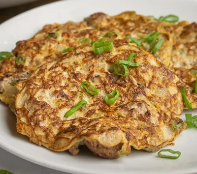

Grandma's Torta
A recipe inspired by the torta my grandma would make on busy days where we had no time to cook or eat! Very fulfilling and versatile!

Image by: Sarah
Ingredients:
- 1 pound ground beef or pork
- 5 Eggs
- Diced yellow or white onion
- Garlic
- Banana ketchup (regular ketchup works fine!)
- Pandesal (or any sandwich bread)
- 1 tablespoon cooking oil
- Salt & pepper to taste
- Optional:
- Diced potatoes
- Diced tomatoes
- Cooked rice
Directions:
- Dice your onion and mince your garlic.
- In a medium-large pan, add in the cooking oil and place over medium heat.
- Add in your onion, garlic (and the diced tomato and potato if you’re adding these).
- Add the ground meat to the pan and season with salt and pepper. Cook for 5-6 minutes until browned.
- Turn off the stove and place everything in the pan into a bowl. Wait until it cools.
- Add your eggs to the bowl, and whisk well.
- In the same pan you used for the meat (or in a different, pancake-sized pan for exactness), add a teaspoon of oil and then pour in about a cup of the mixture -- it should be about the thickness of a pancake if not thinner.
- Cook the egg on medium-low heat for about 2-3 minutes.
- Flip and cook for an additional 1-2 minutes. The omelette should be golden and crispy.
- Place on a plate with a paper towel.
- Repeat for any remaining batter.
- Add ketchup on the bottom “bun” and arrange into a sandwich.
- You can also eat on top of rice.
- Enjoy!
Table of Contents
Recipes